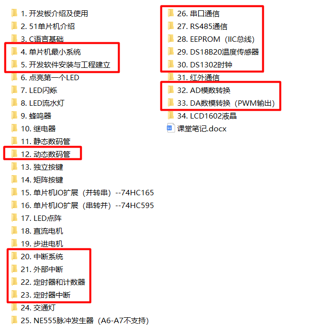

通常我们所说的51单片机是指以51内核扩展出的单片机。生产51单片机的厂商很多，51单片机的型号也很多。下表列出了一些51单片机的厂商和型号。
| 公司 | 产品 |
|---|---|
| AT(ATmel) | AT89C51 AT89C52 AT89C53 AT89C55 AT89S51 AT89S52等 |
| Philips(飞利浦) | P80C54 P80C58 P87C54 P87C58 P87C5等 |
| STC(国产宏晶) | STC89C51RC、STC89C52RC、STC89C53RC、90C516等 |
STC—前缀，表示芯片为STC公司生成的产品。
8—表示该芯片为8051内核的芯片。
9—表示内部含FLASH存储器，还有如80C51中的0表示内部含Mask ROM（掩模ROM）存储器；如87C51中7表示内部焊EPROM存储器（紫外线可擦除ROM）。
C—表示该器件为CMOS产品。还有如89LV52和89LE58中的LV和LE都表示该芯片为低电压产品（通常为3.3V电压供电）；而89S52表示该芯片含有可串行下载功能的FLASH存储器，即具有ISP可在线编程功能。
5—固定不变。
1—表示该芯片内部程序存储空间的大小。1为4KB，还有如 2为8KB，3为13KB，4为16KB，8为32KB 16为63KB。程序空间大小决定了一个芯片所能装入执行代码的多少。一般来说，程序存储空间越大芯片价格也越高，所以我们在选择芯片时要根据自己需要对单片机型号进行选择。只要程序能装的下，同类芯片的不同型号不会影响其功能。
RD+—表示单片机内部RAM的代销，RD+表示内部RAM为1280B，还有如RC为512B。
51是我们学校开的第一门单片机课，我们是在大二，我也是从那时候才开始了解的，从此步入了新世界的大门(#^.^#)
51入门之前我们起码要确保已经学了模电数电还有C语言，这是最基本的课程了，它会帮助你跟好的看懂原理图，时序图，编写代码。想提前了解51的也可以边学基础边学51，视自己的情况而定
我是自己买了一个普中的板子，51-双核-A7开发板（51和stm8集中到了一个板子）看的是他们录的视频,视频结构如下，重点已经圈出
还有配套的代码，工具，资料(我不是他们的托 就是自己学着觉得不错)这一套跟下来就算是入门了，再也不用担心老师的课堂作业了O(∩_∩)O哈哈~ stm8的资料很少而且贵，大家可以只买51的核心板【动手能力强的可以自己做一个最小系统板(至于怎么做可以参考焊接一个STC单片机最小系统)】然后外设需要学什么就买什么(至于怎么卖，买什么，去哪买请参考店铺推荐)
普中科技资料网站这里面他家的配套代码，可以点击链接下载
之后为了巩固增加知识还可以看以下两个视频中的一个:
这个教学视频和我们学校学的课程很像(小声说一下 他比老师教的好一点点 ┐(´∇｀)┌) 点击进入官网
这个教学视频能开阔自己的思路
以上提及所有视频项目资料我的网盘里也为大家收集整理好了(快夸我贴心ヾ(o´∀｀o)ﾉ )
网盘链接 提取码：7ewb